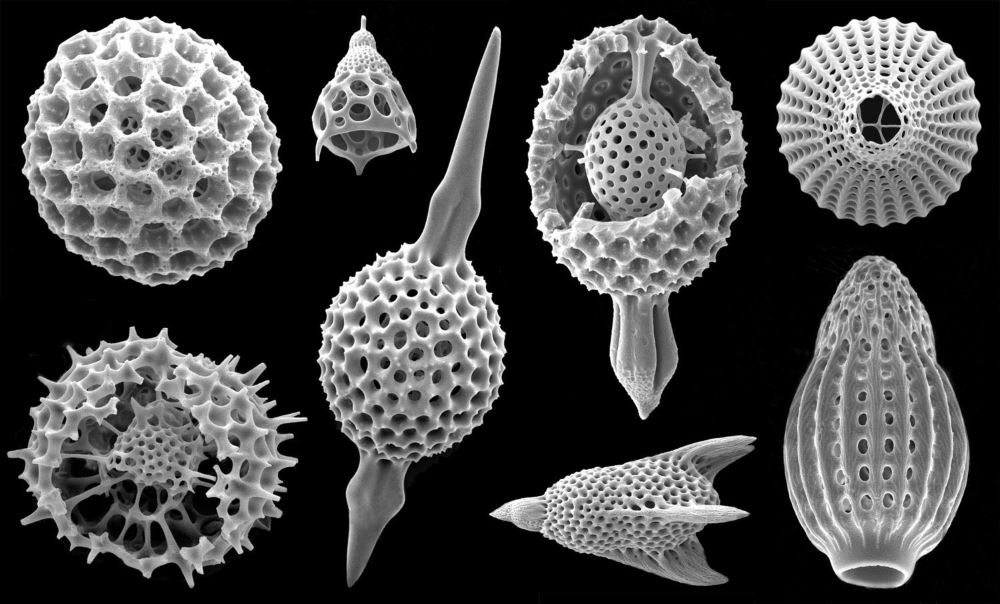

| ¿Qué es el reino protista? |
|---|
| Se entiende por reino protista, también llamado protoctista, a uno de los grupos en que la biología clasifica los seres vivos, más específicamente los eucariotas, junto con el reino animal, vegetal y fungi: se denomina protistas a todos aquellos eucariotas que no pueden ser clasificados ni como animales, plantas u hongos. El reino protista es un grupo parafilétio (no contienen a todos los descendientes de un antepasado común) y agrupa a un conjunto muy diverso de organismos generalmente monocelulares, tanto autótrofos como heterótrofos. Dicha variedad hace que sea difícil caracterizarlos, excepto en los rasgos comunes de todo ser eucariótico, o sea, poseedor de células con un núcleo celular definido. |
| CARACTERÍSTICAS |
|
Al no ser un grupo monofilético, o sea, que comparte una historia evolutiva, los integrantes del reino protista no poseen rasgos comunes fundamentales con los cuales caracterizarlos,
como no sean los propios de la vida eucariótica: los mismos que pueden presentar plantas, hongos y animales, pero en la clasificación biológica que les atribuye el estatus de reino (la de Robert Whittaker de 1969),
su condición fundamental sería la de ser “organismos eucariotas unicelulares o unicelulares-coloniales, que no conforman ningún tipo de tejidos”. Así, excepto su relativa simpleza evolutiva, no hay demasiado en común entre las distintas formas de protistas, y presentan distintos modelos de nutrición, reproducción, locomoción y estructuras celulares. |
| CLASIFICACIÓN |
PROTISTAEl reino de los protistas tradicionalmente se divide en supergrupos muy distintos entre sí, de la siguiente manera:
 |